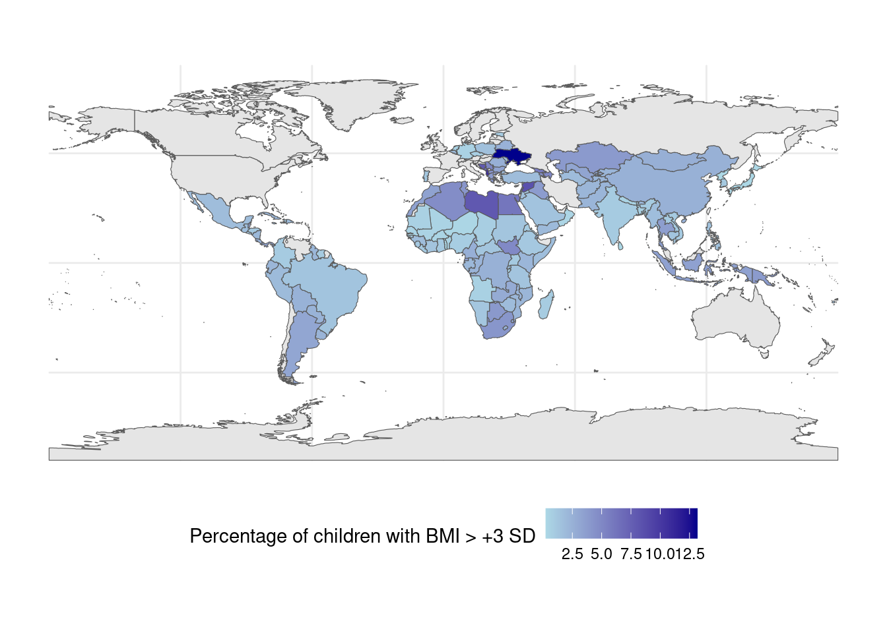
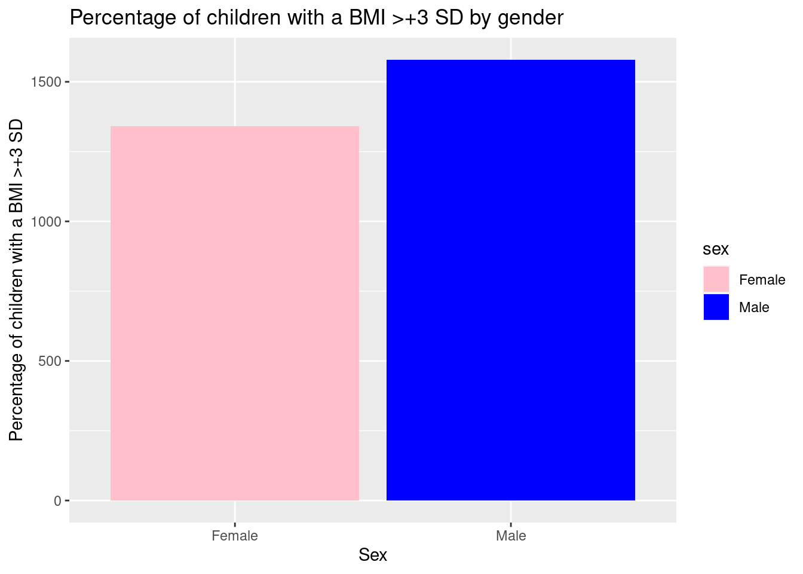
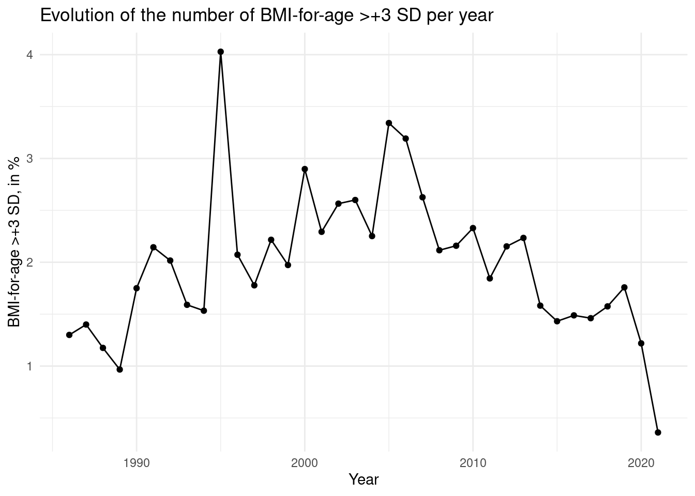
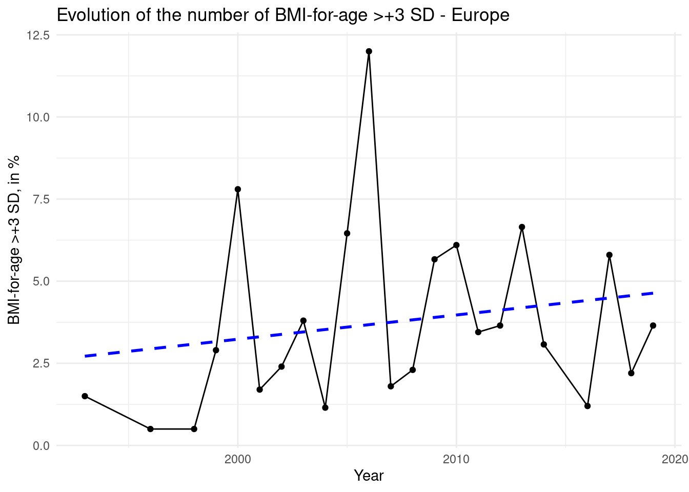

Quarto Report
The Body Mass Index (BMI) is a widely used indicator to determine whether a person’s weight is healthy or not based on their height and weight. BMI-for-age is a specific type of BMI calculation that takes into account a child’s age and sex, making it a useful tool for monitoring the growth and development of children.
In recent years, concerns have been raised about the increasing number of children who are overweight or obese. According to the World Health Organization (WHO), childhood obesity has more than doubled in the past two decades, with an estimated 41 million children under the age of five now considered overweight or obese. The issue of childhood obesity is particularly acute in low- and middle-income countries where rates are increasing at an alarming rate. To monitor the prevalence of childhood obesity, UNICEF, in collaboration with WHO, regularly collects data on the BMI-for-age of children under the age of five. The data is based on a standard deviation (SD) score, which measures how far a child’s BMI-for-age is from the average BMI-for-age of a reference population. When a child’s BMI-for-age is more than three SD above the average, it is considered to be in the >+3 SD category, indicating severe obesity. This category is of particular concern as severe obesity can lead to a range of health problems, including cardiovascular disease, diabetes, and certain types of cancer. UNICEF’s data on BMI-for-age >+3 SD provides valuable insights into the prevalence of severe childhood obesity around the world. The most recent data shows that the problem is most acute in the Pacific Islands, where as many as one in five children under the age of five are classified as severely obese. Other regions with high rates of severe obesity include the Middle East and North Africa, as well as parts of Latin America and the Caribbean. The data also highlights the need for urgent action to address the growing problem of childhood obesity. UNICEF and WHO have called for a range of interventions, including promoting healthy diets and physical activity, improving food environments, and regulating the marketing of unhealthy foods to children.
In conclusion, UNICEF’s data on BMI-for-age >+3 SD provides an important indicator of the prevalence of severe childhood obesity around the world. The data highlights the urgent need for action to address this growing problem, which poses a major threat to the health and well-being of children around the world.
The graph represents the countries that have been studied. we can see that this map of the world represents the percentage of children with a BMI greater than 3 in the countries concerned, we can see that there are contrasts between the countries, the cursor will help you see them better.

On this diagram, you will see that women are less affected than men by obesity.

On the graph above, we can see the evolution of the number of children affected by obesity in the world through the years. We can see that after a global increase until 2005, the trend is rather decreasing since.
If we now compare with the graph for Europe only, which can be seen below, we notice that the trend is not the same, with on the contrary an increase in the number of children affected by obesity over the years, shown by the regression line.
`geom_smooth()` using formula = 'y ~ x'